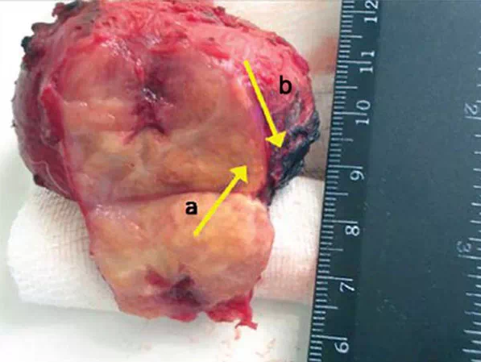

ΑΠΟ ΤΗ ΣΥΧΝΟΟΥΡΙΑ ΣΤΟΝ ΚΑΡΚΙΝΟ ΤΟΥ ΠΡΟΣΤΑΤΗ - ΜΟΝΟ ΕΝΑ ΒΗΜΑ!
Επικεφαλής ουρολόγος του ιατρικού κέντρου.
Annette Hoffmann
Καθηγητής, Διδάκτωρ Ιατρικών Επιστημών, Αναπαραγωγολόγος, Κύριος Ερευνητής του Ανδρολογικού Τμήματος του Ινστιτούτου, μέλος της Γερμανικής, Ευρωπαϊκής και Αμερικανικής Ουρολογικής Εταιρείας, καθώς και της Αμερικανικής Εταιρείας Έρευνας για τον Καρκίνο (AACR).
Εμπειρία: πάνω από 25 χρόνια
ΠΡΩΤΑ ΣΗΜΑΔΙΑ ΠΡΟΣΤΑΤΙΤΙΔΑΣ:
- Συχνοουρία
-
- Μειωμένη ισχύς (στυτική δυσλειτουργία)
-
- Προβλήματα με την ούρηση
-
- Ενόχληση ή πόνος στη βουβωνική χώρα και στο κάτω μέρος της πλάτης
-
Στο αρχικό στάδιο, η ασθένεια πρακτικά δεν εκδηλώνεται, αλλά η μείωση της ισχύος και τα προβλήματα με την ούρηση είναι το πρώτο σημάδι μιας νόσου. Το πιο σημαντικό είναι να μην καθυστερείτε. Η ανικανότητα είναι το πιο αβλαβές αποτέλεσμα αυτής της ασθένειας. Πολύ πιο επικίνδυνος είναι ο σχηματισμός όγκου - αδενώματος προστάτη, που τις περισσότερες φορές οδηγεί σε καρκίνο του προστάτη.
Επομένως, η ασθένεια της προστατίτιδας δημιουργεί διάφορους κινδύνους για τους άνδρες, οι κυριότεροι από τους οποίους είναι:
ΑΝΙΚΑΝΟΤΗΤΑ - ΑΔΕΝΩΜΑ ΠΡΟΣΤΑΤΗ - ΚΑΡΚΙΝΟΣ ΤΟΥ ΠΡΟΣΤΑΤΗ
 Αφαιρεμένος όγκος του προστάτη (διάμετρος 65 mm) Ανικανότητα εμφανίζεται στο 100% των περιπτώσεων, δηλαδή σε όλους τους άνδρες που πάσχουν από την προστατίτιδα. Αργά ή γρήγορα, αλλά αυτό είναι το μόνο αποτέλεσμα που μπορεί να επιτευχθεί, εάν δεν αντιμετωπιστεί η προστατίτιδα.
Ο καρκίνος του προστάτη εμφανίζεται στα τελευταία στάδια της προστατίτιδας και δεν είναι σπάνιος. Οι άνδρες που δεν θεραπεύουν την προστατίτιδα και ζουν με αυτήν, στην πραγματικότητα «παίζουν με τη φωτιά». Εάν θέλετε να έχετε μεγάλη διάρκεια ζωής και καλή στύση, πρέπει να αντιμετωπίσετε την προστατίτιδα. Και πρέπει να το κάνετε το συντομότερο δυνατό.
Το πρόβλημα είναι ότι, οι περισσότεροι άνδρες με την προστατίτιδα δεν ζητούν βοήθεια από τους γιατρούς. Κάποιοι δεν πιστεύουν ότι είναι επικίνδυνο, ενώ άλλοι το βρίσκουν ντροπιαστικό. Τέλος, έχουμε μια κατάσταση όπου οι πάσχοντες δεν δίνουν σημασία στην ασθένειά τους. Και αν ζητήσουν βοήθεια, πολύ συχνά είναι πολύ αργά, όταν ο καρκίνος έχει ήδη αρχίσει να αναπτύσσεται.

Χειρουργική επέμβαση αφαίρεσης καρκινικού όγκου του προστάτη Πρέπει να γίνει κατανοητό, ότι η προστατίτιδα είναι μια θανατηφόρα ασθένεια. Ένας από τους κύριους κινδύνους αυτής της ασθένειας είναι, ότι μπορεί να εξελιχθεί σε καρκινικό όγκο. Αυτό, με τη σειρά του, οδηγεί συχνά στο θάνατο του ασθενούς. Χωρίς θεραπεία και έλεγχο, η ασθένεια μερικές φορές αναπτύσσεται γρήγορα και μπορεί να οδηγήσει σε καρκίνο σε μόλις 1-2 χρόνια.
Αλλά τώρα, οι άνδρες έχουν μια μοναδική ευκαιρία να απαλλαγούν από αυτήν την ασθένεια μια για πάντα, χωρίς να επισκέπτονται τακτικά γιατρούς.
Το γεγονός είναι, ότι το 2020 εμφανίστηκε ένα επαναστατικό προϊόν που αποκαθιστά γρήγορα τη λειτουργία του προστάτη, εξαλείφει τη φλεγμονή, θεραπεύει πλήρως την προστατίτιδα, ακόμη και αν είναι χρόνια, και επίσης αυξάνει σημαντικά την ισχύ και τη διάρκεια της σεξουαλικής επαφής. Το προϊόν ονομάζεται PX-300. Πρόκειται για ένα πολύ προσιτό γερμανικό προϊόν, αν και στην ανάπτυξή του συμμετείχαν ιατροί από την Αμερική και τη Γαλλία.

Το 2022, το Γερμανικό Ινστιτούτο Ουρολογίας, το οποίο είναι το κορυφαίο ευρωπαϊκό επιστημονικό κέντρο στον τομέα της ουρολογίας, ολοκλήρωσε με επιτυχία τις κλινικές δοκιμές ενός προϊόντος νέας γενιάς PX-300, που έχει σχεδιαστεί για την καταπολέμηση της προστατίτιδας. Η υπηρεσία Τύπου του Κέντρου ανέφερε τα εξής:
1. Η αποτελεσματικότητα του PX-300, που υπολογίζεται σύμφωνα με την τυπική μέθοδο (ο αριθμός των ασθενών που έχουν γιατρευτεί σε σχέση με τον συνολικό αριθμό ασθενών σε μια ομάδα 100 ατόμων που υποβλήθηκαν σε θεραπεία), είναι 98%.
2. Η απουσία εκδηλώσεων της νόσου μετά τη διακοπή του προϊόντος (σύμφωνα με τα αποτελέσματα των παρατηρήσεων για 6 μήνες) ήταν 99%.
3. Μετά την καθημερινή χρήση του προϊόντος, όλοι οι ασθενείς σημείωσαν σημαντική αύξηση της λίμπιντο και της ισχύος.
4. Το προϊόν συνέβαλε στην αύξηση της διάρκειας της σεξουαλικής επαφής στο 95% των ασθενών.
5. Δεν έχουν εντοπιστεί ανεπιθύμητες παρενέργειες, συμπεριλαμβανομένων των αλλεργικών αντιδράσεων.
6. Το επαναστατικό προϊόν PX-300 αναγνωρίζεται ως κορυφαίο στην καταπολέμηση της προστατίτιδας.
Σχόλια ειδικών:
Kurt Schule
Προϊστάμενος της ουρολογικής κλινικής του Πανεπιστημίου του Μονάχου, καθηγητής, καταξιωμένος ουρολόγος.
Εμπειρία: πάνω από 40 χρόνιαΜέχρι το 2020, δεν υπήρχε αποτελεσματικό και, κυρίως, προσιτό προϊόν για τη θεραπεία της προστατίτιδας στην Ευρώπη, κάτι που οδήγησε σε απίστευτες συνέπειες: το ποσοστό επίπτωσης ήταν 45% του ενήλικου πληθυσμού και, το χειρότερο, 30% των νέων ανδρών. Το PX-300 είναι μια επανάσταση στη θεραπεία της προστατίτιδας, μια πραγματική πανάκεια. Η αποτελεσματικότητα των σταγόνων PX-300 έχει αποδειχθεί στην πράξη στη Γερμανία και ήδη στην Ευρώπη. Η μοναδική σύνθεση και η ανακάλυψη ζωντανών κυττάρων από τους επιστήμονες έχουν καταστήσει το PX-300 απαραίτητο προϊόν για τη θεραπεία της προστατίτιδας.
Το προϊόν έχει περάσει όλες τις κλινικές δοκιμές. Τα αποτελέσματα που προέκυψαν ήταν μια πραγματική έκπληξη για τους ουρολόγους. Περίπου το 98% όλων των ασθενών ανάρρωσαν χωρίς υποτροπή. Και σε άλλους, τα συμπτώματα εξαφανίστηκαν εντελώς και οι φλεγμονώδεις διεργασίες στον αδένα του προστάτη σταμάτησαν. Στο υπόλοιπο 2% των ασθενών, θα μπορούσαν να εμφανιστούν κάποιες υποτροπές, οι οποίες ωστόσο εξαφανίστηκαν με την πρόσθετη χρήση του PX-300.
Επιπλέον, λόγω του συνδυασμού των μοναδικών συστατικών του PX-300, η ισχύς και η διάρκεια της σεξουαλικής επαφής αυξάνονται σημαντικά.
Το PX-300 είναι καλό επειδή λύνει το πρόβλημα στο σύνολό του. Έχει μια εκπληκτική θεραπευτική επίδραση σε ολόκληρο το ουρογεννητικό σύστημα των ανδρών. Με μια λέξη, μετά από μια πορεία λήψης αυτού του προϊόντος, το ανδρικό σώμα θα λειτουργεί σαν να ήταν 25 ετών. Επομένως, το προτείνω σε όλους ανεξαιρέτως ηλικίας. Και για όσους δεν έχουν προστατίτιδα, το προϊόν έχει ισχυρό προληπτικό αποτέλεσμα και αυξάνει σημαντικά τη δραστικότητα.
Εκτός από τη Γερμανία, το προϊόν πιστοποιήθηκε στην Ευρώπη στο Πανεπιστήμιο Ουρολογίας του Παρισιού. Οι κλινικές δοκιμές επιβεβαίωσαν πλήρως τα ισπανικά δεδομένα. Στη Γαλλία, το ποσοστό των ασθενών που έχουν γιατρευτεί είναι ακόμη υψηλότερο.
Το PX-300 είναι προς το παρόν διαθέσιμο μόνο για παραγγελία στον ιστότοπο. Έχουμε προσπαθήσει πολλές φορές να προμηθεύσουμε το προϊόν μας σε αλυσίδες φαρμακείων, αλλά θέλουν να ορίσουν την υψηλότερη δυνατή τιμή και να το πουλήσουν πολλές φορές περισσότερο από ό,τι θέλουμε. Βλέπετε, το Ουρολογικό Κέντρο, όπως και το Ιατρικό Ίδρυμα, είναι μια μη κερδοσκοπική δομή. Στόχος μας δεν είναι να βγάλουμε λεφτά. Θέλουμε απλώς να παρέχουμε αυτό το προϊόν σε ολόκληρο τον πληθυσμό. Ως εκ τούτου, το πουλάμε μπαίνοντας οικονομικά μέσα, αντισταθμίζοντας τη διαφορά μέσω των εξαγωγών. Και ο κύριος στόχος των φαρμακευτικών αλυσίδων είναι να βγάλουν χρήματα. Επομένως, έχουμε ριζικά διαφορετικές προσεγγίσεις στην τιμολόγηση.

Επιβεβαιώνω πλήρως! Αυτό είναι ένα σούπερ προϊόν! Το αγόρασα πρόσφατα πριν από ενάμιση μήνα και από τότε δεν έχω κανένα πρόβλημα. Η προστατίτιδα εξαφανίστηκε εντελώς, αν και πριν από αυτό δεν μπορούσε να θεραπευτεί, και η στύση βελτιώθηκε σημαντικά και υπάρχει μεγαλύτερη επιθυμία για σεξ. Το προτείνω σε όλους, ειδικά σε άντρες άνω των 40!
Ευχαριστώ PX-300.
Παιδιά, μην περιμένετε. Η προστατίτιδα είναι επικίνδυνη, γιατί στη χρόνια της μορφή μπορεί να οδηγήσει σε καρκίνο του προστάτη. Ο συγγενής μου είχε προστατίτιδα, επομένως, έχοντας νιώσει τα συμπτώματα, πήγα αμέσως στον γιατρό. Πηγαίνω όμως σε γιατρούς εδώ και ένα χρόνο χωρίς αποτέλεσμα. Θα δοκιμάσω το PX-300 χωρίς αμφιβολία.
Τον τελευταίο ενάμιση χρόνο είχα πόνο στον προστάτη, πήγα για μασάζ, έπαιρνα χάπια, αλλά οι πόνοι επανήλθαν. Όμως το PX-300 έλυσε όλα τα προβλήματα σε μόλις δύο εβδομάδες, και πραγματικά ξέχασα τον προστάτη, αν και οι γιατροί μου είπαν πως ήταν χρόνιος και δεν μπορούσε να γίνει τίποτα γι 'αυτό.

Ξεκίνησα με ένα γνωστό φάρμακο, το έπαιρνα για 2 μήνες, όπως μου συνέταξε ο γιατρός και δεν είχε αποτέλεσμα. Δεν ένιωθα καλύτερα και έπρεπε να πηγαίνω στην τουαλέτα όλο και πιο συχνά. Ως αποτέλεσμα, η θεραπεία απέτυχε. Μετά βρήκα το PX-300 online. Και σκέφτηκα: «Πρέπει να προσπαθήσω, αν οι γιατροί δεν μπορούν να κάνουν τίποτα». Και παρόλο που οι γιατροί δεν μπορούσαν να κάνουν τίποτα, το PX-300 έλυσε το πρόβλημά μου εντελώς και πολύ απροσδόκητα.

Ποτέ δεν πίστευα, ότι μια μέρα θα διαγνωστώ με μια τόσο σοβαρή ασθένεια. Για έναν νεαρό άνδρα, αυτό είναι σαν το τέλος της αυτοπεποίθησης και της σεξουαλικής ζωής. Λοιπόν, δεν απελπίστηκα, έκανα πολλές και διάφορες ολοκληρωμένες θεραπείες. Ξόδεψα πολλά χρήματα. Όμως τελικά μόνο το PX-300 με βοήθησε! Δεν περίμενα το αποτέλεσμα να είναι τόσο γρήγορο και άψογο.

Μπορώ να προτείνω αυτές τις σταγόνες. Τις δοκίμασα ο ίδιος. Στην αρχή έπαιρνα πολλά αντιβιοτικά, πήγα σε μασάζ, γενικά, είχα διάφορες θεραπείες για μεγάλο χρονικό διάστημα. Αλλά μετά από μερικούς μήνες, ένιωσα το ίδιο όπως στην αρχή της θεραπείας, και ίσως ακόμη χειρότερα. Έχουν περάσει 4 μήνες από τότε που δοκίμασα το PX-300 και ξέχασα ότι είχα ποτέ προστατίτιδα.

Παιδιά, είναι ένας εφιάλτης! Ζω με την προστατίτιδα εδώ και 5 χρόνια, έχω έως και 10 υποτροπές το χρόνο! Λίγος κρύος αέρας είναι αρκετός για νιώσω όλα τα συμπτώματα. Πήγα στους γιατρούς, πήρα αντιβίωση, αλλά δεν βοηθάει, μόνο για λίγο βελτιώνεται και μετά όλα επανέρχονται! Δεν θέλω πλέον να παίρνω αντιβιοτικά, μου φαίνεται ότι ο οργανισμός μου δεν τα ανέχεται άλλο. Πιστεύετε ότι το PX-300 θα με βοηθήσει;

Αντιμετώπιζα την προστατίτιδα με Vitafon, το 2019. Έκανα και ασκήσεις για να βοηθήσω στην πυελική συμφόρηση, με βοήθησε πολύ, αλλά τα συμπτώματα επέστρεψαν. Δοκίμασα το PX-300, τώρα δεν έχω κανένα πρόβλημα, τα προβλήματά μου έχουν φύγει τελείως.
Ο σύζυγός μου είχε επίσης προβλήματα, και προσπάθησε να τα αντιμετωπίσει για μεγάλο χρονικό διάστημα, αλλά χωρίς επιτυχία. Τότε ο γιατρός είπε, ότι τα βακτήρια που προκαλούν την προστατίτιδα συνήθισαν τα αντιβιοτικά που έπαιρνε ο άντρας μου. Τον συμβούλεψε να χρησιμοποιήσει το PX-300. Και για να τον ευχαριστήσει, ο σύζυγός μου, του έδωσε ένα ολόκληρο κουτί ουίσκι.
Έκανα μια διαβούλευση με τον γιατρό μου για το PX-300 και μου είπε ότι δεν μπορούσε να πει τίποτα με σιγουριά, αλλά αν το δοκίμαζα θα ήθελε να μάθει το αποτέλεσμα. Το αποτέλεσμα ήταν εξαιρετικό, θεραπεύτηκα από την προστατίτιδα και ο γιατρός δεν μπορούσε να πει κάτι παρά να σηκώσει τους ώμους του...
Δεν υπάρχουν ανάλογα του PX-300 στην αγορά. Προστατεύει επίσης από τον καρκίνο. Αυτό είναι το μόνο προϊόν με 100% αποτελεσματικότητα. Το έχω δοκιμάσει μόνος μου και έχει βοηθήσει και δύο φίλους μου. Γενικά, μπορώ να πω χωρίς αμφιβολία, ότι δεν πρόκειται για υποκειμενική άποψη, αλλά για ήδη θεραπευμένους ανθρώπους.
Παρήγγειλα αυτό το προϊόν πριν από ένα μήνα περίπου, ένιωσα το αποτέλεσμα μετά τη χρήση μιας εβδομάδας. Ήδη σκεφτόμουν την επέμβαση και τώρα την ακύρωσα. Είμαι 54 χρονών, και νιώθω 34, δεν το περίμενα καν.